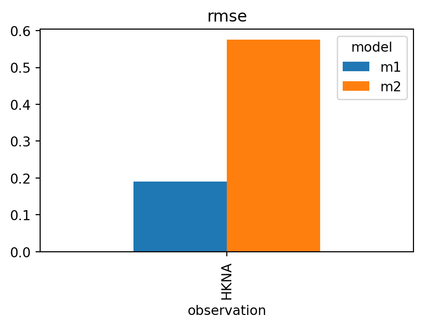

The primary data filtering method of ModelSkill is the sel() method which is accesible on most ModelSkill data structures. The sel() method is a wrapper around xarray.Dataset.sel and can be used to select data based on time, location and/or variable. The sel() method returns a new data structure of the same type with the selected data.
TimeSeries data
Point and track timeseries data of both observation and model result kinds are stored in TimeSeries objects which uses xarray.Dataset as data container. The sel() method can be used to select data based on time and returns a new TimeSeries object with the selected data.
The Comparer and ComparerCollection objects hold matched data from observations and model results, enabling you to evaluate model performance effectively. These objects provide intuitive methods to filter and query data based on time, model, quantity, or spatial criteria.
The primary methods for filtering the data are:
sel(): Use for structured selections based on time, model, or spatial boundaries.
where(): Use for conditional filtering based on logical criteria.
query(): Use for flexible, expression-based filtering in a pandas-like style.
The sel method allows you to select data based on specific criteria such as time, model name, or spatial area. It returns a new Comparer object with the selected data. This method is highly versatile and supports multiple selection parameters, which can be combined.
This filters the data to include only the model named “m1”.
Example 3: Selecting a spatial area
cmp_area =cmp.sel(area=[4.0, 52.5, 5.0, 53.0])
This filters the data within the bounding box defined by [x0, y0, x1, y1].
where() method
The where method is used to filter data conditionally. It works similarly to xarray’s where method and returns a new Comparer object with values satisfying a given condition. Other values will be masked (set to NaN).
This filters the data to include rows where m1 < 2.9 and Observation > 3.0.
query() method
The query method uses a pandas.DataFrame.query-style syntax to filter data based on string-based expressions. It provides a flexible way to apply complex filters using column names and logical operators.
This filters the data where Observation is greater than 3.0 and m1 is less than 2.9.
Skill objects
The skill() and mean_skill() methods return a SkillTable object with skill scores from comparing observation and model result data using different metrics (e.g. root mean square error). It returns a SkillTable object, which wraps a pandas.DataFrame and organizes the skill scores for further filtering, visualization, or analysis.
The resulting SkillTable object provides several methods to facilitate filtering and formatting: - sel(): Select specific models or observations. - query(): Apply flexible conditions with pandas-like queries.
sk =cmp.skill(metrics=["rmse", "mae", "si"])sk
n
rmse
mae
si
model
observation
m1
HKNA
120
0.190451
0.155128
0.060252
m2
HKNA
120
0.574975
0.525915
0.080212
Example 7: Select model
sk.sel(model='m1')
model
observation
n
rmse
mae
si
0
m1
HKNA
120
0.190451
0.155128
0.060252
Here, sk contains skill scores for all models, and sk_m1 filters the results to include only model “m1”. Observations can be selected in the same way.
Example 8: Querying skill scores
sk_high_rmse = sk.query("rmse > 0.3")sk_high_rmse
n
rmse
mae
si
model
observation
m2
HKNA
120
0.574975
0.525915
0.080212
This filters the SkillTable to include only rows where the root mean square error (RMSE) exceeds 0.3.
Example 9: Accessing and visualizing specific metrics
sk_rmse = sk.rmsesk_rmse
rmse
model
observation
m1
HKNA
0.190451
m2
HKNA
0.574975
sk_rmse.plot.bar(figsize=(5,3))

The rmse attribute directly accesses the RMSE column from the SkillTable, which can then be plotted or analyzed further.